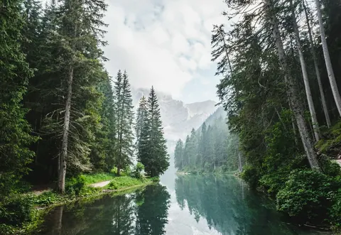

JIKOO ON / EARTH CITIZEN
I don't look for places to visit.
I look for places where life feels right.
I live in different places, move across borders, meet people, enter the water, and record what each place teaches me.
Then I turn those experiences into things I build.

SECTION 02 / FIELD DIRECTIONS
WHAT ARE YOU LOOKING FOR?
Start with the direction you are curious about, not a platform.Where should I live?
Cities · month-long stays · cost of living · weather · neighborhoods
↘ 02 / MOVEHow should I move?
Borders · flights · buses · visas · getting ready
↘ 03 / CONNECTHow do I live among strangers?
Solo travel · meeting people · relationships · local life
↘ 04 / EXPLOREWhat should I experience?
Diving · surf · islands · oceans · nature · adventure
↘ 05 / MAKE / RECORDHow do I keep the experience?
Photos · writing · LOMO Route Studio · making
↘SECTION 03 / LIVING ARCHIVE
LATEST FIELD NOTES
Recent records from the field. Meet the experience before the platform.LOMO / ROUTE TOOL
Even after the trip,
the route you moved through remains.
LOMO reads time and location data from your travel photos and turns your movement across Earth into one film.
START FREE ON THE APP STORE ↗ YOUR PHOTOS → YOUR ROUTE → YOUR STORY
NOTE
05
SECTION 05 / THE OBSERVER
I grow distant landscapes slowly in one record.
I used to be afraid of water.
Now I'm a diver.
I was not always free to travel, and I did not always know how to build things. I lived in unfamiliar cities, entered the water, crossed borders, and recorded what happened through photographs and writing.
At some point, recording was no longer enough, so I began building tools. Jikoo On is not a finished life; it is an ongoing experiment in how to live better on Earth.
SECTION 06 / EARTH CITIZEN
EARTH CITIZEN
FIELD LETTER
Twice a month.
One place I've lived,
one thing it taught me,
and one place I'm heading next.
FIELD COLLABORATION
WORK WITH JIKOO
I create field-tested travel stories, photography and short-form video from places I actually experience.
SECTION 08 / FOLLOW THE RECORDS
ARCHIVE / FOLLOW THE RECORDS
 A record of light gathered across distance↗
02
WAYPOINT 02 / ESSAY STRATUM브런치Sentences left after the landscape passes
A record of light gathered across distance↗
02
WAYPOINT 02 / ESSAY STRATUM브런치Sentences left after the landscape passes
 Essays that stay with a slow journey↗
03
WAYPOINT 03 / FIELD & CITY NOTESTistoryCity · stay · practical travel notes
Essays that stay with a slow journey↗
03
WAYPOINT 03 / FIELD & CITY NOTESTistoryCity · stay · practical travel notes
 Field notes from learning unfamiliar cities by body↗
04
WAYPOINT 04 / LIVING TERRARIUMLOMO Earth@lomo.earth
Field notes from learning unfamiliar cities by body↗
04
WAYPOINT 04 / LIVING TERRARIUMLOMO Earth@lomo.earth

LOMO World / House / Experiments↗ 05 WAYPOINT 05 / TEXT CONVERSATIONThreads@threads Follow the next field note↗
LOMO House
A sketch of a house holding the moisture of the sea,
the light of the desert, and the time of forests and moss.